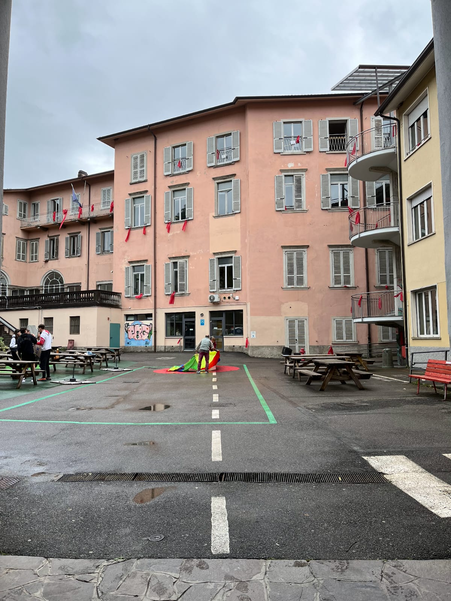
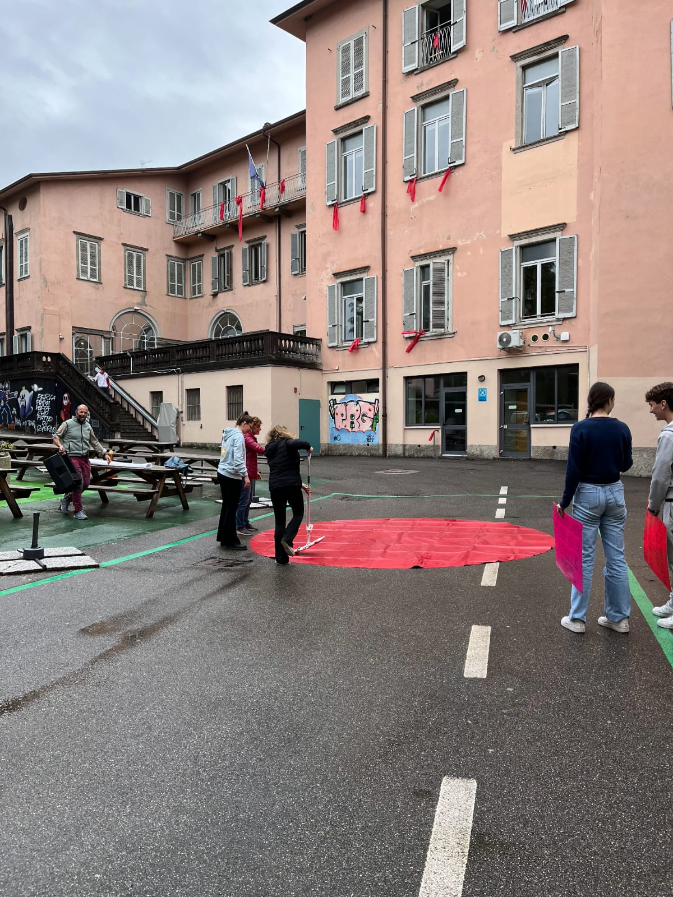
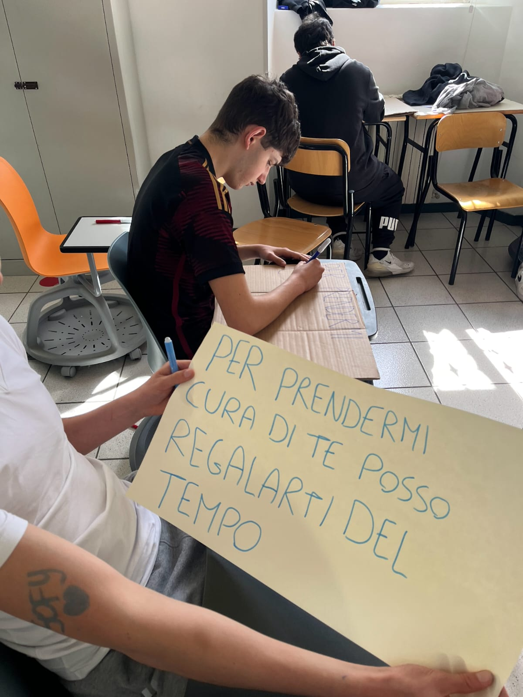
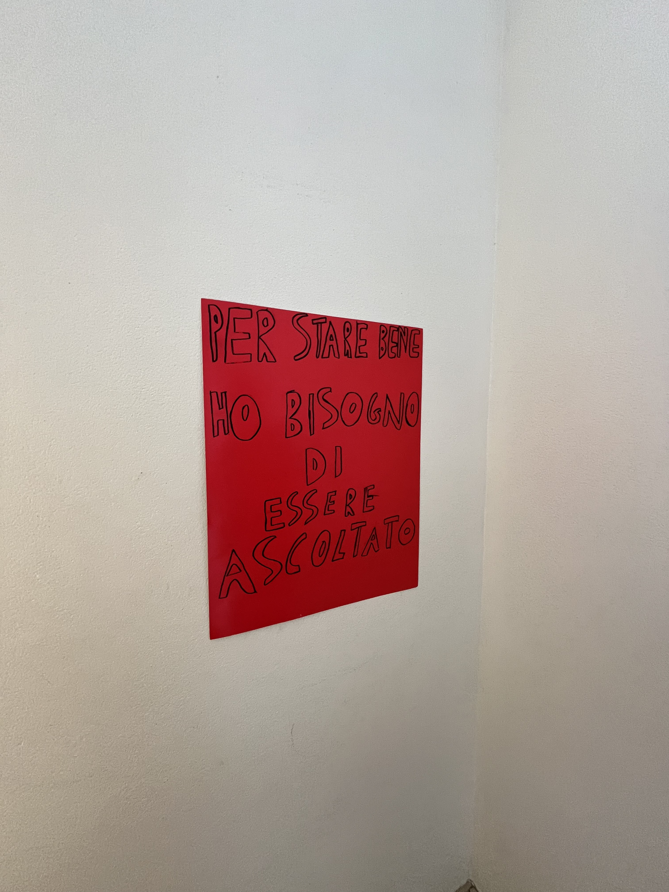
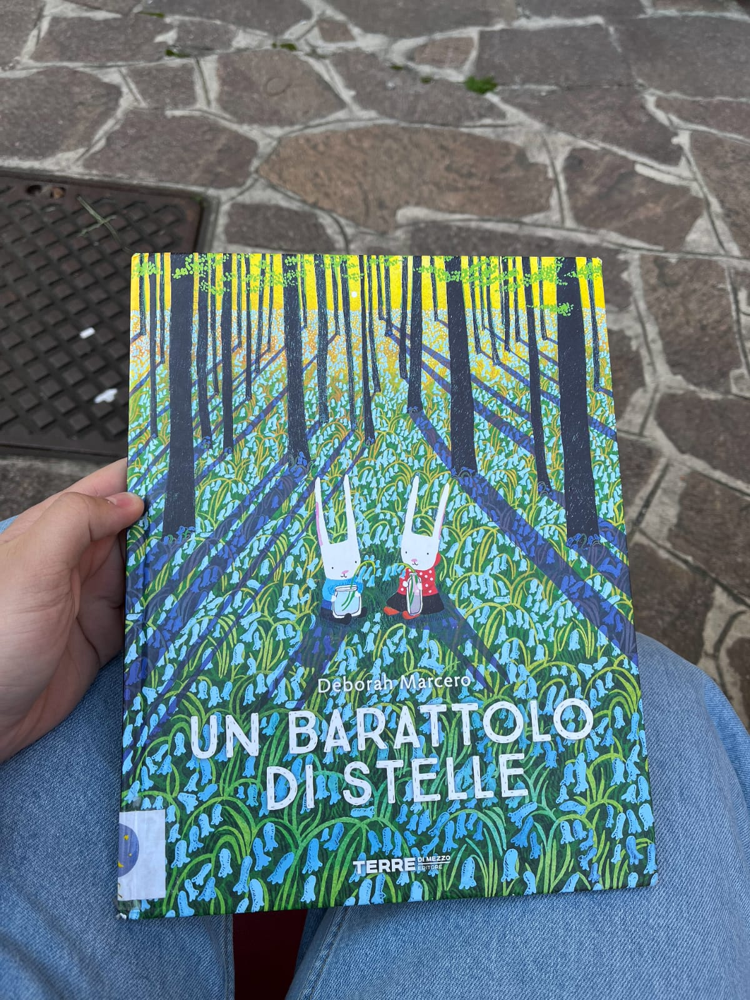
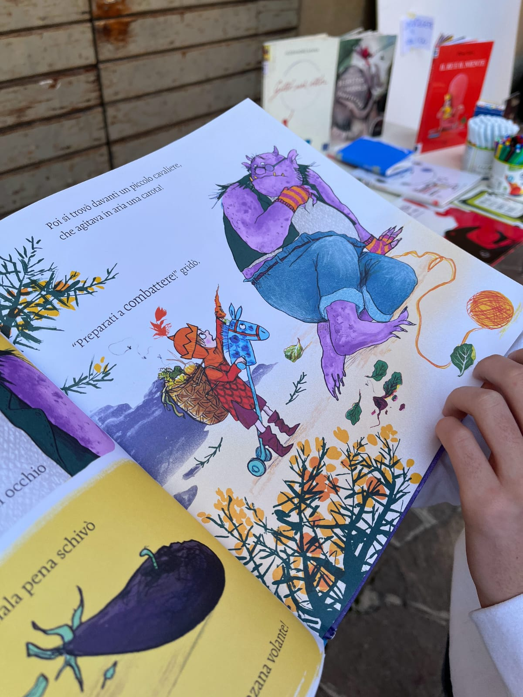
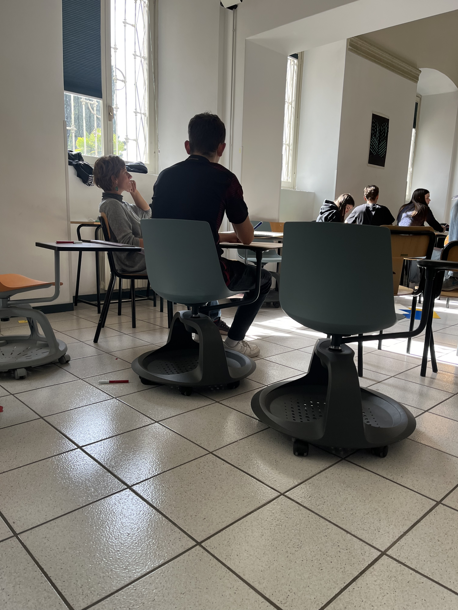

[ REPORT PCTO ]
BENESSERE EMOTIVO
& COMUNITÀ
Studente
Lorenzo Marcassoli
Associazione & Rete
La Pentola d'Oro A.P.S. (Alzano L.)
Periodo
Novembre — Aprile (A.S. 23/24)
Studente
Lorenzo Marcassoli
Associazione & Rete
La Pentola d'Oro A.P.S. (Alzano L.)
Periodo
Novembre — Aprile (A.S. 23/24)



Un percorso itinerante per analizzare la sfera relazionale, abbattere i confini della classe e attivare dinamiche sociali sane nel tessuto cittadino.



Studio guidato delle dinamiche interpersonali. Comprensione profonda dei fattori psicologici e sociali che strutturano rapporti umani stabili, sani e collaborativi.
Riscoperta e applicazione di abilità concrete attraverso chiavi di lettura trasversali. Campi d'azione diversificati: dalla cucina alla lettura fino all'analisi dei media.
Attività sul campo oltre l'edificio scolastico: sessioni operative sviluppate presso il Consultorio Familiare, la Biblioteca e le sedi istituzionali del Comune.
"Mettersi in gioco in prima persona. Abbiamo incanalato creatività ed espressività individuale per la sintesi e la stesura dell'elaborato finale."
Mediazione relazionale: Il laboratorio dedicato all'interazione diretta con l'infanzia ha rappresentato il vero fulcro del valore civile e sociale del progetto.
Decodifica emotiva: Una sfida comunicativa radicale: trovare la sintassi e i metodi idonei per trasmettere concetti complessi legati alla sfera dei sentimenti.


Istruttivi i confronti con il personale esterno dei presidi visitati. Gli esperti Nicola e Valeria ci hanno guidato nella formazione collettiva.
Monica Altobelli (Tutor). Presenza costante, attenta all'ascolto e al dibattito critico sulle tematiche relazionali trattate.
"Un'esperienza arricchente che mi ha offerto un prezioso insegnamento sociale, insegnandomi a collaborare in modo diverso e profondo."